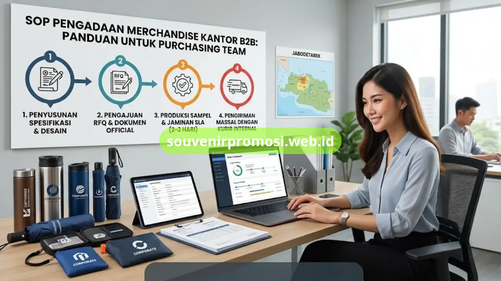
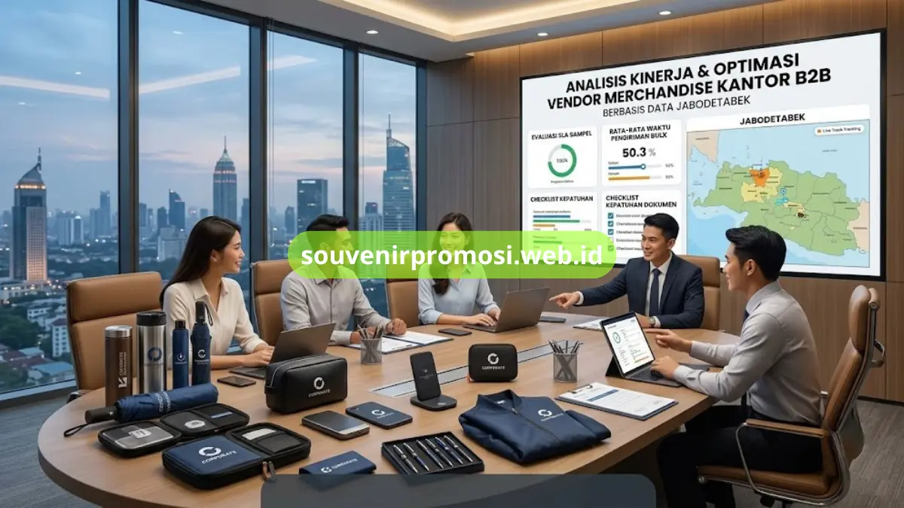

Poin Penting
- SOP pengadaan merchandise kantor terdiri dari 4 tahapan: spesifikasi, RFQ, sampel, dan pengiriman.
- Dokumen spesifikasi yang rinci sejak awal mencegah revisi dan selisih ekspektasi di lapangan.
- RFQ resmi membantu verifikasi legalitas dan kapasitas produksi vendor sebelum kerja sama dimulai.
- Souvenir Promosi memberi jaminan sampel selesai dalam 2-3 hari kerja untuk kepastian linimasa proyek.
- Tersedia metode pembayaran termin/tempo B2B dan kurir internal khusus wilayah Jabodetabek.
Daftar Isi
Souvenir Promosi hadir untuk memangkas kerumitan proses pengadaan merchandise kantor ini, mulai dari konsultasi desain, produksi sampel, hingga pengiriman bulk yang tepat waktu dan bergaransi resmi bagi divisi purchasing korporat.
Bagi tim purchasing dan procurement, memesan souvenir kantor dalam jumlah besar bukan sekadar urusan belanja rutin. Ada banyak variabel yang harus dikendalikan: kesesuaian anggaran, ketepatan spesifikasi produk, legalitas dokumen pengadaan, hingga kepastian barang tiba sebelum tenggat acara.
Tanpa SOP yang jelas, proses ini rawan molor, membengkak biayanya, atau bahkan berujung pada kualitas produk yang tidak sesuai ekspektasi. Artikel ini disusun sebagai panduan bagi tim purchasing yang ingin membangun sistem pengadaan merchandise kantor yang rapi, terukur, dan minim risiko.
Mengapa SOP Pengadaan Merchandise Sangat Penting bagi Perusahaan?
Banyak perusahaan menganggap pembelian souvenir promosi sebagai transaksi kecil yang tidak memerlukan prosedur formal. Anggapan ini keliru, terutama ketika volume pemesanan mencapai ratusan hingga ribuan unit untuk kebutuhan seminar, gathering, atau hadiah klien korporat.
Tanpa SOP, tim purchasing kerap menghadapi tiga masalah klasik: pertama, spesifikasi produk yang berubah-ubah di tengah proses karena tidak didokumentasikan sejak awal; kedua, ketiadaan jaminan kualitas sehingga barang cacat baru diketahui setelah diterima; dan ketiga, keterlambatan pengiriman yang berdampak langsung pada jadwal acara perusahaan.
SOP yang terstruktur memberi kejelasan peran, memastikan setiap tahapan pengadaan merchandise kantor terdokumentasi dengan baik, dan yang terpenting, memberi ruang bagi tim purchasing untuk melakukan mitigasi risiko sejak dini. Ketika sebuah perusahaan memiliki alur baku dalam memilih vendor merchandise kantor, negosiasi harga, dan verifikasi sampel, pengadaan tidak lagi bergantung pada satu orang saja — sistem itu sendiri yang menjaga konsistensi hasil, siapa pun yang menjalankannya.
4 Tahapan SOP Pengadaan Merchandise Kantor B2B yang Efektif
Berikut adalah matriks perbandingan standar SLA (Service Level Agreement) yang umum berlaku di industri dibandingkan dengan solusi yang ditawarkan Souvenir Promosi kepada mitra korporatnya:
| Kriteria Pengadaan | Standar SLA Industri | Solusi Layanan Souvenir Promosi |
|---|---|---|
| Ketersediaan Produk | Terbatas / harus inden lama | Kategori lengkap (Merchandise, Tumbler, Payung, Gadget, Event Kit) |
| Kecepatan Sampel | 5-7 hari kerja tanpa kepastian | Jaminan sampel selesai dalam 2-3 hari kerja |
| Keamanan Transaksi | Pembayaran penuh di muka | Metode pembayaran fleksibel (Termin/Tempo B2B khusus corporate) |
| Pengiriman Barang | Mengandalkan ekspedisi pihak ketiga | Kurir internal khusus untuk wilayah Jabodetabek |
Empat tahapan berikut adalah kerangka kerja yang disarankan agar proses pengadaan merchandise kantor berjalan efisien dari awal hingga barang diterima.
Tahap 1: Penyusunan Spesifikasi Kebutuhan & Desain Souvenir
Tahap pertama dimulai jauh sebelum vendor dihubungi. Tim purchasing perlu menyusun dokumen spesifikasi kebutuhan secara rinci: jenis produk (tumbler, payung, gadget, atau paket seminar kit), material yang diinginkan, jumlah unit, warna korporat, serta posisi dan ukuran logo perusahaan. Dokumen ini sebaiknya disusun bersama tim marketing atau brand jika souvenir akan digunakan untuk kebutuhan eksternal, agar tidak ada revisi besar di tengah jalan.
Kesalahan yang paling sering terjadi pada tahap ini adalah spesifikasi yang terlalu umum, misalnya hanya menyebut "souvenir kantor minimalis" tanpa detail ukuran atau teknik cetak. Semakin rinci dokumen spesifikasi, semakin akurat pula penawaran harga yang akan diterima dari vendor, dan semakin kecil kemungkinan terjadi selisih ekspektasi saat sampel pertama tiba.

Tahap 2: Pengajuan Dokumen Penawaran Resmi (RFQ)
Setelah spesifikasi final, langkah berikutnya adalah mengirimkan Request for Quotation (RFQ) kepada beberapa kandidat supplier souvenir promosi. RFQ yang baik memuat rincian teknis produk, target waktu pengerjaan, estimasi anggaran, serta permintaan dokumen legalitas vendor seperti NPWP, akta perusahaan, dan riwayat pengadaan sebelumnya. Legalitas ini penting terutama bagi instansi pemerintah dan perusahaan besar yang wajib memenuhi standar audit internal maupun eksternal.
Pada tahap ini, tim purchasing juga sebaiknya meminta portofolio pengalaman vendor menangani volume serupa. Vendor yang transparan soal kapasitas produksi dan riwayat kliennya umumnya lebih dapat diandalkan untuk pesanan bulk berskala besar.
Tahap 3: Produksi Sampel Teruji & SLA Jaminan Mutu
Sebelum produksi massal dijalankan, sampel fisik wajib diuji terlebih dahulu. Tahap ini menjadi penentu kualitas akhir karena mencakup pengecekan material, kerapian sablon logo, daya tahan warna, hingga fungsi produk itu sendiri. Idealnya, proses sampel memiliki SLA yang jelas — misalnya selesai dalam 2-3 hari kerja — sehingga tim purchasing dapat menyusun linimasa proyek secara akurat tanpa menunggu tanpa kepastian.
Kontrol kualitas (quality control) yang ketat pada tahap sampel juga menjadi cara paling efektif untuk menghemat budget souvenir promosi secara keseluruhan, karena kesalahan yang terdeteksi di tahap sampel jauh lebih murah diperbaiki dibandingkan ketika sudah masuk produksi bulk ribuan unit.
Tahap 4: Pengiriman Tepat Waktu dengan Kurir Internal
Tahap terakhir, dan sering menjadi titik paling rawan, adalah pengiriman barang. Ketergantungan pada ekspedisi pihak ketiga kerap menimbulkan ketidakpastian waktu tiba, terutama untuk pengiriman bulk yang butuh penanganan khusus agar produk tidak rusak dalam perjalanan.
Vendor yang memiliki kurir internal atau armada pengiriman sendiri untuk wilayah tertentu — seperti Jabodetabek — biasanya mampu memberikan kepastian jadwal yang jauh lebih baik dibandingkan mengandalkan jasa ekspedisi umum.
Mengapa Memilih Souvenir Promosi sebagai Vendor Tepercaya?
Menentukan vendor merchandise kantor yang tepat adalah keputusan yang berdampak jangka panjang terhadap efisiensi kerja tim purchasing. Souvenir Promosi telah berpengalaman menyuplai kebutuhan merchandise kantor dan seminar kit ke lebih dari 150+ instansi pemerintah dan swasta di wilayah Jabodetabek, dengan tingkat keakuratan pengiriman (SLA) mencapai 99.8%. Pengalaman ini terbangun dari konsistensi menjaga mutu produk di setiap batch produksi.
Dari sisi teknis, proses sablon logo dikerjakan dengan presisi tinggi menggunakan tinta anti luntur, sehingga identitas brand tetap tajam meski produk digunakan dalam jangka panjang. Setiap batch produksi juga melalui quality control ketat sebelum dikirim, dan pelanggan mendapatkan jaminan garansi retur untuk produk yang ditemukan cacat.
Cara Mengajukan Penawaran Harga Pengadaan di souvenirpromosi.web.id
Proses pengajuan penawaran dirancang agar tidak membebani tim purchasing dengan birokrasi berlebihan. Langkah pertama adalah menyiapkan dokumen spesifikasi kebutuhan seperti dijelaskan pada Tahap 1 di atas. Setelah itu, tim purchasing dapat menghubungi langsung melalui kanal resmi di souvenirpromosi.web.id atau via WhatsApp untuk konsultasi awal mengenai kategori produk, estimasi anggaran, dan linimasa proyek.
Tim Souvenir Promosi akan membantu menyusun rekomendasi produk yang sesuai dengan budget, termasuk opsi metode pembayaran termin/tempo khusus corporate bagi perusahaan yang memerlukan fleksibilitas arus kas. Setelah kesepakatan dicapai, proses berlanjut ke tahap sampel dan produksi sesuai SOP yang telah dijelaskan sebelumnya.
Kesimpulan
Menyusun SOP pengadaan merchandise kantor yang rapi bukan sekadar formalitas administratif, melainkan fondasi agar setiap pemesanan bulk berjalan lancar, bergaransi, dan bebas dari keterlambatan pengiriman yang merugikan jadwal perusahaan.
Dengan memilih vendor yang memiliki legalitas jelas, SLA terukur, dan rekam jejak yang teruji, tim purchasing dapat fokus pada strategi jangka panjang alih-alih memadamkan masalah operasional harian. Konsultasikan kebutuhan pengadaan Anda dan cek katalog lengkapnya sekarang di https://souvenirpromosi.web.id/.